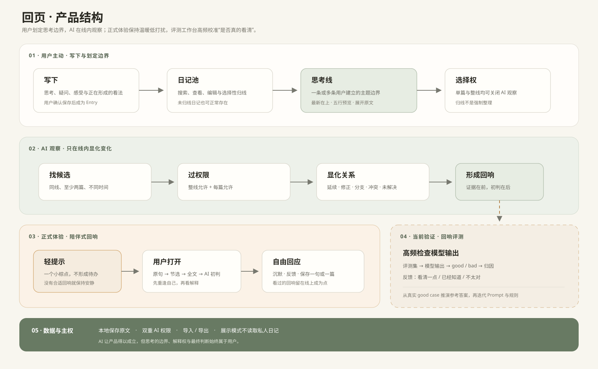
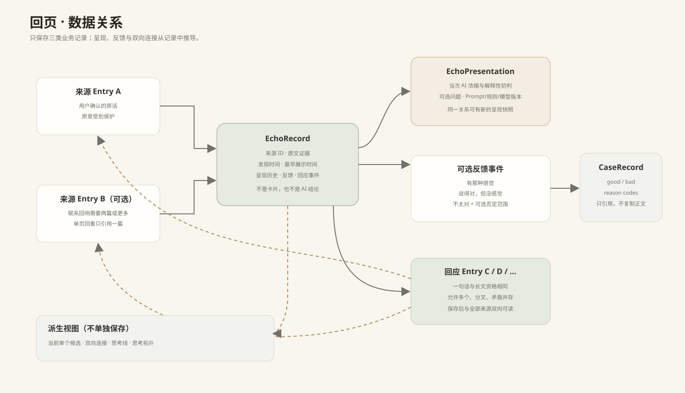

回页 · 产品图示
2026-08-08 · 思考线约束与回响评测版
用户流程
 正式体验保持低打扰；虚线评测区服务于当前高频积累 good case 与 bad case。
正式体验保持低打扰；虚线评测区服务于当前高频积累 good case 与 bad case。
产品结构

用户划定边界，AI 在线内观察，评测帮助回响逐步变得更懂用户。数据关系

产品数据与评测工作台分区；参考答案只从稳定 good case 中逐步推演。2026-08-08 · 思考线约束与回响评测版
正式体验保持低打扰；虚线评测区服务于当前高频积累 good case 与 bad case。

用户划定边界，AI 在线内观察，评测帮助回响逐步变得更懂用户。
产品数据与评测工作台分区；参考答案只从稳定 good case 中逐步推演。